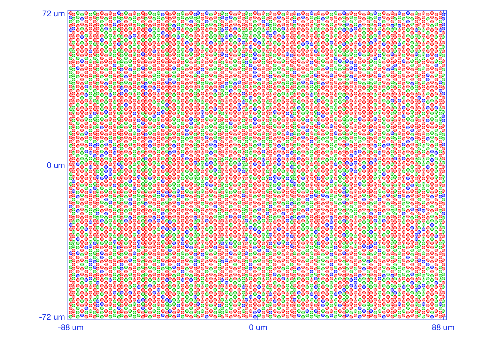
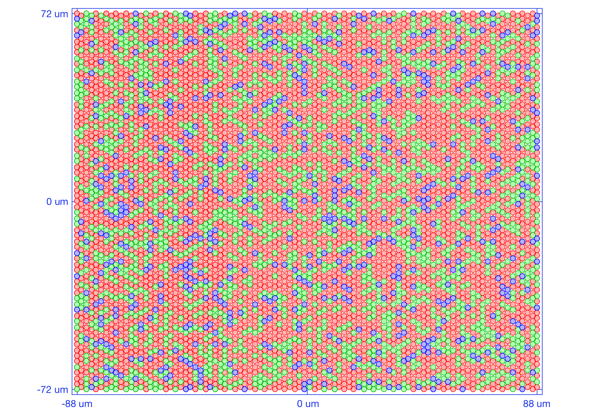
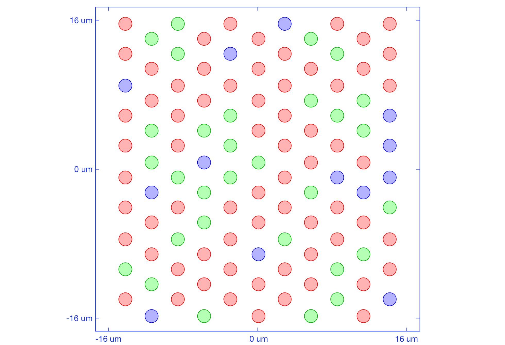
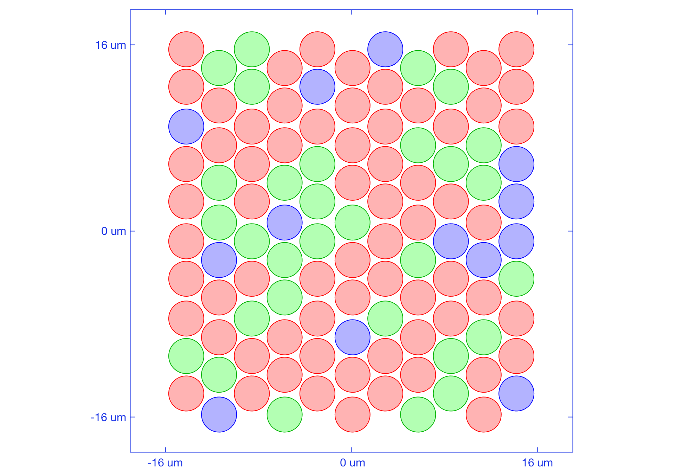

t_coneMosaicHex1
Shows how to generate a default hexagonal mosaic, and how to customize it (FOV, resamplingFactor).
NPC ISETBIO Team, Copyright 2016
Contents
Initialize
ieInit; clear; close all; % Interactive mode. Set to true to have it pause at useful places. % Default is false so we can autopublish without user input interactiveMode = false; % Freeze random number generator rng('default'); rng(219347);
Unit test 1: generate a hex mosaic using defaults params of the superclass (coneMosaic)
Mosaic Parameters
mosaicParams = struct(... 'resamplingFactor', 3, ... % controls the accuracy of the hex mosaic grid 'spatiallyVaryingConeDensity', false ... % whether to have an eccentricity based, spatially - varying density ); % Generate the hex grid theHexMosaic = coneMosaicHex(mosaicParams.resamplingFactor, mosaicParams.spatiallyVaryingConeDensity); % Print some grid info and visualize it theHexMosaic.displayInfo(); theHexMosaic.visualizeGrid();
Resampling grid. Please wait ... Done !
Mosaic info:
Size (microns): 176.0 (w) x 144.0 (h)
FOV (deg): 0.59 (w) x 0.49 (h)
Grid resampling factor: 3
Cone aperture (microns): 2.00 (w) x 2.00 (h)
Rectangular grid: 88 cols x 72 rows
Resampled grid: 264 cols x 216 rows
Total cones: 57024
Active cones: 6251
Cone density (all cones): 2250000.0 cones/mm^2
Cone density (active cones): 246646.1 cones/mm^2
 Unit test 2: generate a custom hex mosaic
if (interactiveMode) commandwindow; fprintf('\n<strong>Hit enter to generate a customized hex mosaic based on an 11x16 rect mosaic with equal LMS proportions\n</strong>'); fprintf('<strong>Here we use a high resamplingFactor (10) to get a near perfect hex grid\n</strong>'); pause end % Mosaic Parameters mosaicParams = struct(... 'resamplingFactor', 10, ... % controls the accuracy of the hex mosaic grid 'spatiallyVaryingConeDensity', false, ... % whether to have an eccentricity based, spatially - varying density 'centerInMM', [0.5 0.5], ... % mosaic eccentricity 'size', [11 16], ... % generate from a rectangular mosaic of 11 x 16 cones 'spatialDensity', [0 1/3 1/3 1/3]... % with a LMS density of of 0.33:0.33:0.33 ); theHexMosaic = coneMosaicHex(mosaicParams.resamplingFactor, mosaicParams.spatiallyVaryingConeDensity, ... 'name', 'the hex mosaic', ... 'center', mosaicParams.centerInMM*1e-3, ... 'size', mosaicParams.size, ... 'spatialDensity', mosaicParams.spatialDensity ... ); % Print some grid info and visualize it theHexMosaic.displayInfo(); theHexMosaic.visualizeGrid();
Resampling grid. Please wait ... Done !
Mosaic info:
Size (microns): 97.0 (w) x 66.7 (h)
FOV (deg): 0.33 (w) x 0.22 (h)
Grid resampling factor: 10
Cone aperture (microns): 6.06 (w) x 6.06 (h)
Rectangular grid: 16 cols x 11 rows
Resampled grid: 160 cols x 110 rows
Total cones: 17600
Active cones: 189
Cone density (all cones): 2719144.0 cones/mm^2
Cone density (active cones): 29199.9 cones/mm^2
 Unit test 3: change the field of view to 0.4 x 0.4 deg
newFOV = [0.4 0.4]; if (interactiveMode) commandwindow fprintf('\n<strong>Hit enter to change FOV to [%2.2f, %2.2f]\n</strong>', newFOV(1), newFOV(2)); pause end theHexMosaic.setSizeToFOVForHexMosaic(newFOV); % Print some grid info and visualize it theHexMosaic.displayInfo(); theHexMosaic.visualizeGrid();
Resampling grid. Please wait ... Done !
Mosaic info:
Size (microns): 127.4 (w) x 127.4 (h)
FOV (deg): 0.43 (w) x 0.43 (h)
Grid resampling factor: 10
Cone aperture (microns): 6.06 (w) x 6.06 (h)
Rectangular grid: 20 cols x 20 rows
Resampled grid: 210 cols x 210 rows
Total cones: 44100
Active cones: 429
Cone density (all cones): 2719144.0 cones/mm^2
Cone density (active cones): 26451.5 cones/mm^2
 Unit test 3: change the field of view to 0.2 x 0.4 deg
newFOV = [0.2 0.4]; if (interactiveMode) commandwindow fprintf('\n<strong>Hit enter to change FOV to [%2.2f, %2.2f]\n</strong>', newFOV(1), newFOV(2)); pause end theHexMosaic.setSizeToFOVForHexMosaic(newFOV); % Print some grid info and visualize it theHexMosaic.displayInfo(); theHexMosaic.visualizeGrid();
Resampling grid. Please wait ... Done !
Mosaic info:
Size (microns): 60.6 (w) x 127.4 (h)
FOV (deg): 0.20 (w) x 0.43 (h)
Grid resampling factor: 10
Cone aperture (microns): 6.06 (w) x 6.06 (h)
Rectangular grid: 10 cols x 20 rows
Resampled grid: 100 cols x 210 rows
Total cones: 21000
Active cones: 220
Cone density (all cones): 2719144.0 cones/mm^2
Cone density (active cones): 28486.3 cones/mm^2
